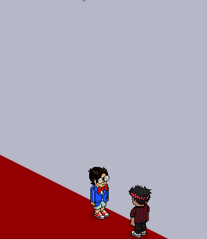
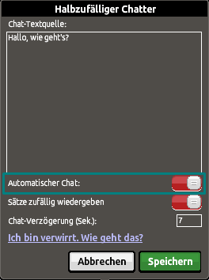
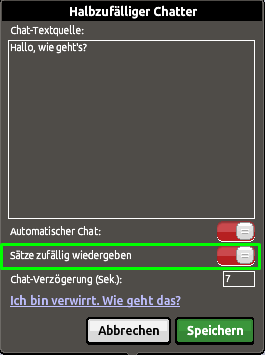
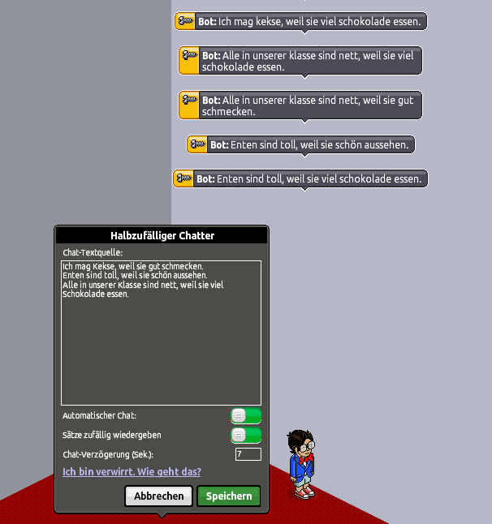
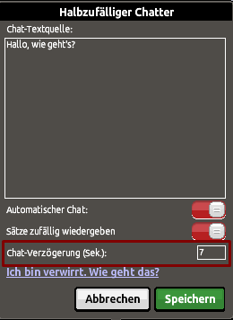
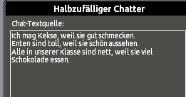
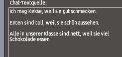

Interessantes aus Habbo
Bot Tutorial: Chatter einrichten
Mit dem Chatter kann eingestellt werden, ob, was und wie der Bot spricht. In diesem Tutorial erfährst du, was der Chatter alles kann und wie man diesen einrichtet.

Chatter einrichten
Damit ein Bot etwas sprechen kann, müssen vorgegebene Sätze gespeichert werden. Dafür klickt man auf den Bot und dann auf "Chatter einrichten" wie im Gif dargestellt. Das Chatter-Fenster öffnet sich, und in der Chat-Textquelle lassen sich die Sätze speichern, die du den Bot sprechen lassen möchtest. Einzelne unabhängige Sätze können mit der Return-/Entertaste ↵ getrennt werden.

Automatischer Chat
Automatischer Chat: Ist sie aktiviert (Taste grün), dann spricht der Bot alle x Sekunden zufällig einen der gespeicherten Sätze, die du in der Textquelle eingegeben hast. Wenn sie deaktiviert ist (Taste rot), spricht der Bot nur dann, wenn ein Habbo etwas gesagt hat. Der Bot reagiert dann nach ein paar Sekunden mit einem zufälligen Satz.

Sätze zufällig wiedergeben
Sätze zufällig wiedergeben: Das zufällige Wiedergeben bezieht sich nicht darauf, dass der Bot Sätze zufällig auswählt, um sie dann auszugeben. Der Bot sucht einen Satz nämlich immer zufällig aus, welchen er sagen möchte, egal was man eingestellt hat! Die Funktion "Sätze zufällig wiedergeben" macht es möglich, bestimmte Sätze bzw. Satzteile neu und zufällig zu ordnen und damit neue Sätze zu bilden, aber nur wenn die Taste dafür auf grün ist. Außerdem müssen die Sätze bestimmten Muster folgen.
Beispiel:
Ich mag Kekse, weil sie gut schmecken.
Enten sind toll, weil sie schön aussehen.
Alle in unserer Klasse sind nett, weil sie viel Schokolade essen.

Sätze werden neu geordnet
Sätze, die zwei Wörter (siehe rot markierte Wörter im Beispiel) beinhalten und direkt aufeinander folgen, werden vom Bot erkannt, wenn in mehreren Sätzen die Kombination wieder auftaucht. Das heißt, wenn sich das Muster wiederholt, wie im Beispiel gezeigt. Mehr zu dieser Funktion befindet sich hier.

Chat-Verzögerung (Sek.)
Chat-Verzögerung (Sek.): Erst, wenn der automatische Chat aktiviert ist, spielt die Chat-Verzögerung eine Rolle. Es kann innerhalb des Kästchens eine Zahl eingegeben werden. Mindestens 7 Sek. Achtung: Die Verzögerungen sind nicht absolut gleich, daher kann dies nicht als eine Art Zeitmessung o. ä. verwendet werden.
Bugs umgehen:
Es kann immer wieder vorkommen, dass der Bot nicht das tut was er soll und Bugs entstehen. Empfehlenswert ist dann den Bot neu in den Raum zu stellen. Manchmal hilft es auch neu abzuspeichern oder einfach beides auszuprobieren. Und wenn der Bot oft das 1. Wort verschluckt, dann kann es daran liegen, dass die Sätze nicht direkt untereinander stehen. Die Sätze sollten keinen Abstand voneinander haben (siehe Bilder unten).

Richtig

Falsch